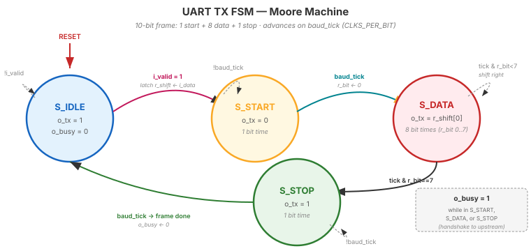

Video 2 of 4 · ~10 minutes
Dr. Mike Borowczak · Electrical & Computer Engineering · CECS · UCF
The FSM + datapath decomposition is the canonical shape of every digital controller. Every USB device splits “enumeration state machine + data pipeline.” Every SPI controller splits “transaction FSM + shift registers.” Every PCIe endpoint, every Ethernet MAC, every SATA controller — all FSM-plus-datapath. Mastering this decomposition means you can design any protocol endpoint.
Today's UART TX is the first time you'll see this pattern applied end-to-end. Day 12 UART RX uses it again. Day 12 SPI uses it again. Your capstone protocol controllers will use it again. Learn the decomposition once; reach for it forever.
“I'll write one big always block with nested ifs that handle the start bit, shift out data, and signal stop bit. One block = clean code.”
Separate control (“what should the TX line do right now?” — an FSM) from datapath (“what is the current bit value?” — a shift register + counter). The FSM tells the datapath when to load, shift, and idle. The datapath holds the byte and produces the serial output. Each block stays under 50 lines, each testable independently.
┌─ control plane ─────────────────┐ ┌─ data plane ───────────────┐
│ │ │ │
│ FSM │ │ PISO shift register │
│ (4 states: IDLE, START, │ ──→ │ (holds byte being TXed) │
│ DATA, STOP) │ │ │
│ │ │ ↓ serial output ↓ │
│ ↑ │ │ │
│ │ tick (from baud gen) │ │ Output mux │
│ │ │ │ (picks: idle=1, start=0, │
│ baud counter / mod-N counter │ │ data=shift_lsb, stop=1) │
│ (tells FSM when bit is done) │ │ │
└─────────────────────────────────┘ └─────────────────────────────┘
FSM signals: load, shift, sel_idle/start/data/stop
mod_n_counter. The shift register is your Week 2 piso_shift. The FSM is a 4-state 3-block template from Week 2 Day 7. No new primitives — only composition.
| State | Output | Duration | Exit condition |
|---|---|---|---|
S_IDLE | TX=1 (idle high) | until request | i_valid high → S_START |
S_START | TX=0 (start bit) | 1 bit time | baud tick → S_DATA |
S_DATA | TX=shift_lsb | 8 bit times | 8 ticks → S_STOP |
S_STOP | TX=1 (stop bit) | 1 bit time | baud tick → S_IDLE |
S_DATA, a sub-counter (0..7) counts bits. The FSM stays in S_DATA for 8 baud ticks, then transitions to S_STOP. Clean 3-block template from Week 2.

o_tx value (Moore — outputs depend only on state). The whole frame is just “walk the loop once”: IDLE → START → DATA (×8) → STOP → IDLE. baud_tick is the only thing that advances state; everything between ticks is the bit-time wait. o_busy is high in any non-idle state.
┌──────────────────────────┐
upstream │ │ tx line to
(app) ──▶│ UART TX │──────────▶ RS-232 cable
│ │
i_data │ .i_data[7:0] │ o_tx
i_valid │ .i_valid │
o_busy │ .o_busy │
└──────────────────────────┘
Sequence:
1. App puts byte on i_data, raises i_valid.
2. TX sees i_valid && !o_busy → captures byte, starts transmission.
3. TX raises o_busy for duration of 10-bit frame.
4. App sees o_busy high → does not submit a new byte yet.
5. TX returns to idle → o_busy drops → app can send next byte.
valid && !busy. Clean, standardized, composable.
Starting from S_IDLE, how many baud ticks between i_valid assertion and the TX line returning to idle?
1 / byte_time.
S_STOP state. But a standards-compliant UART typically leaves at least 1 bit of idle between bytes.
~5 minutes
▸ COMMANDS
cd lecture_examples/week3_day11/d11_s3_ex1/
cat uart_tx.v # scaffold only, no logic
make sim
# Testbench verifies the FSM
# sequencing but TX line is WIP
gtkwave tb.vcd &▸ EXPECTED STDOUT
PASS: S_IDLE on reset
PASS: S_START after valid
PASS: S_DATA after 1 tick
PASS: 8 cycles in S_DATA
PASS: S_STOP after 8 ticks
PASS: back to S_IDLE
=== 14 passed, 0 failed ===▸ GTKWAVE
Signals: r_state · r_baud_cnt · r_bit_cnt · i_valid · o_busy. The state steps through IDLE→START→DATA(×8)→STOP→IDLE exactly as the table predicts. Video 3 adds the datapath — the actual byte shifting — to finish the design.
Ask AI: “Describe the state machine for a UART transmitter using the FSM+datapath decomposition. List states, outputs, transitions, and the external handshake signals.”
TASK
AI describes UART TX FSM.
BEFORE
Predict: IDLE/START/DATA/STOP, valid/busy handshake, baud counter.
AFTER
Strong AI separates control from data. Weak AI merges them in one state description.
TAKEAWAY
AI clarity correlates with architectural clarity.
① UART TX = FSM (control) + datapath (shift reg + output mux).
② Four states: IDLE, START, DATA (×8), STOP.
③ Valid/busy handshake is the standard producer/consumer protocol.
④ Every building block exists from Week 2 — this is composition, not invention.
🔗 Transfer
Video 3 of 4 · ~12 minutes
▸ WHY THIS MATTERS NEXT
You have the architecture. Video 3 is the live build: you'll write the Verilog from scratch, watch it simulate, watch it synthesize. By the end: a working, simulated UART TX. Day 11 video 4 hooks it up to your computer.